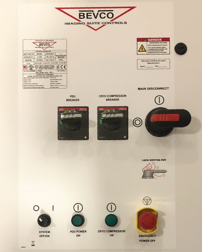

- 00000018WIA30376950GYZ
- id_20258022.4
- Sep 20, 2022 5:30:25 PM
Checking the Emergency Off function
Procedure to verify the Emergency Off function.
Prerequisites
| Personnel requirements | |||
|---|---|---|---|
| Required persons | Preliminary requirements | Procedure | Finalization |
| 1 | - | - | - |
About this task
Overview
This document provides the procedure for doing a check of the EMERGENCY OFF function of the power for the entire system.
Note: To do a check of the EMERGENCY STOP function of the Power Distribution Unit (PDU) for the Gradient subsystem, and RF subsystem, see Checking the Emergency Stop function.
The PDU EMERGENCY STOP buttons are located on the Operator Workspace Keyboard and on the Magnet Enclosure front cover (two buttons, left and right). A SYSTEM OFF button is located on the System Main Disconnect Panel. The other EMERGENCY OFF buttons are located by the customer.
System shutdown
About this task
Procedure
- Click the Tools button and choose System Shutdown from the menu.Note: Shutting down the system as indicated above also shuts down the ICNs.
Figure 1. Service tools menu 
Emergency off
About this task
The AC power for the Magnet Monitor is not controlled by the Emergency Off button.
Procedure
- Press one of the E-Off buttons, which will look similar to the examples in the figure below. The location of the buttons was specified by the customer, and generally they are located on the wall next to the computer equipment or next to the MR magnet room doors.
Figure 3. Example E-Off buttons 
- Make sure that power was removed from the PDU by looking at the PDU phase indicator lights and examining the input voltage test points (as the lights may have burned out).
Figure 4. PDU phase indicator lights - on with power (left) and off with no power (right) 
1 Phase indicator lights 2 Input voltage - Restore power to PDU.
- Reset the Emergency Off button (twist-to-release).
- On the MDP panel, turn the SYSTEM OFF/ON selector switch to on position.
- Turn the MAIN INPUT breaker to on position.
- Turn the PDU INPUT breaker to on position. The PDU POWER LED will be on.
Figure 5. Restore power to PDU 
- On the PDU front panel, turn the main breaker to on position and press the EMO RESET button.
Figure 6. EMO RESET button 
Finalization
Finalization
- Run the Doing a check scan procedure to make sure the system is functioning normally.